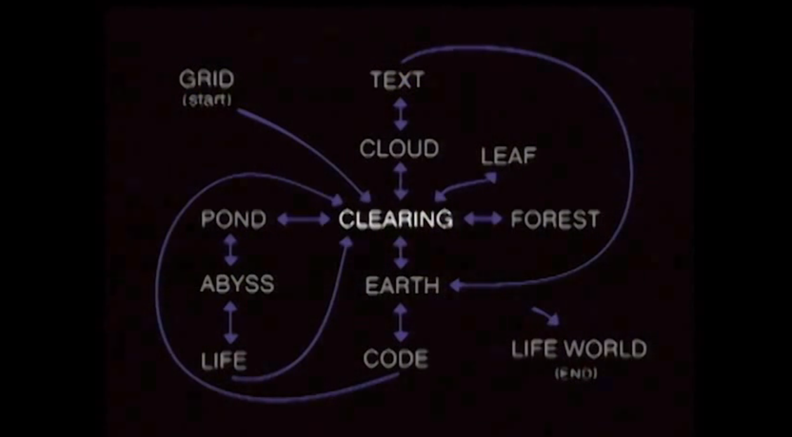

Case Study: Osmose
Char Davies, 1995
- Char Davies was painter, became co-founder of SoftImage (-> Autodesk)
- She wanted to demonstrate medium's potential, and "aspects related to the medium of "virtual reality" that are often overlooked"
The author calls for a subversion of conventional approaches to VR on the basis that they reinforce an outdated dualist (and masculine) worldview. She redefines immersive virtual space as a medium for de-habituating perception and re-sensitizing us to our own being in the world.
- "Evoke rather than illustrate"; metaphors, aviod solid objects, use translucencies
Exhibited (and recorded) at Musee d'Art Contemparain de Montreal:
Notice the framing, dramatization of donning equipment, abstracted via silhouette.
Wonderful quote from Bachelard's Poetics of Space
Enter with "orientation space" -- a Cartesian grid
Gives way to a clearing (dissolve & audio cross-fade)
Clearing & "archetypal tree"
- Archetypal tree
- Ground layers
- Rocks underneath
- Surround layers (made of planes)
- Particle-fish, follow paths (schooling?) and rise up through tree
- Sounds & soundtrack, depend on location, orientation, speed of visitor
Explicit parallel with deep-sea diving (floating, breathing to rise/fall, leaning to move)
No solid objects, only translucencies
Transition between "worlds" (scenes?) is spatial dissolve, not just temporal. Osmosis. So you can hover between worlds/scenes, occupying the dissolve.
Outer area of clearing becomes dense green foliage, fish become green, music/sound changes.
Deep underground see code (including real-time sensor data), above cloud see poetry
Scene map

- Most links are reversible
- There are 3 loops
- Life world (after 15 mins) dissolve: object <-> world
Mini documentary
- Solitude
- 12 worlds
- tree as as central metaphor
- Char Davies was painter.
- "Evoke rather than illustrate"
- Installation layout: stereo screen, silhouette screen, computing & equipment space
- Scene map (see below)
- Comments -- Jon McCormack!
Credits
Notable how roles are divided and what constitutes a contributory role here
- Concept & Direction (Char Davies)
- Graphics (Georges Mauro)
- Virtual Reality Software Development (John Harris)
- Music composition & programming (Rick Bidlack)
- Sound design & programming (Dorota Blaszczak)
- Additional voices sample (Kathy Kennedy)
- Interface vest design (Maryse Bienvenu)
- Stereoscopic video projection (Jacques Desbiens)
- Software (Softimage 3D -- she was co-founder...)
- Hardware (Silicon Graphics Inc)
- Editing (Patrick Moine)
- Executive Producer (Daniel Langlois)
Ephemere, 1998
Writing
Osmose: Notes on Being in Immersive Virtual Space
These notes were developed during the process of conceptualising and realising the immersive virtual environment, Osmose (1994-1995)
- communicate not only her vision of world, but which demonstrates medium's potential, and "aspects related to the medium of "virtual reality" that are often overlooked"
Rethinking VR: Key Concepts and Concerns
The author calls for a subversion of conventional approaches to VR on the basis that they reinforce an outdated dualist worldview. She redefines immersive virtual space as a medium for de-habituating perception and re-sensitizing us to our own being in the world.
A longer account of Char's work and ideas leading up to and including Osmose and Ephemere.